| Temas: |
I. |
Flora silvestre
de
la Región Mediterránea |
|
| II.
|
Taxonomía de Gramíneas |
||
| III. |
Otros artículos autónomos en revistas científicas | ||
| IV. |
Notas taxonómicas y corológicas (gramíneas, leguminosas y otras familias de la flora silvestre mediterránea) | ||
| V. |
|||
| VI. |
Conservación de la biodiversidad vegetal | ||
| VII. |
Otros temas de investigación | ||
| VIII. |
Publicaciones y documentos de divulgación y docencia | ||
| Lista de los taxones
estudiados: Enlace
externo |
|||
Proyecto: Flora Vascular de Andalucía
Occidental (1979-1987)
Director: E.F. Galiano (Universidad Complutense de Madrid)
Director: E.F. Galiano (Universidad Complutense de Madrid)
- B. Valdés, S. Talavera & E.F. Galiano (eds.,
1987). Flora Vascular de Andalucía Occidental.
Ketres Editores, S.A., Barcelona. ISBN: 84-85256-63-8
(obra completa)
- Capítulos.-Contribuciones al volumen 2: 5 géneros de Fabaceae (Papilionáceas):
págs.
47-71; 117-127
| Lathyrus (págs. 64-71) | Lens (pág. 63) | Medicago (págs. 117-127) |
| Pisum (pág. 71) | Vicia (págs. 47-63) |
- Capítulos.-Contribuciones al volumen 3: 39 géneros de Poaceae (Gramíneas):
páginas
292; 302-349; 387-395; 408-414
| Aeluropus (392) | Agrostis (336-341) |
Aira (326-327) | Airopsis (328) |
| Alopecurus (348-349) | Ammophila (347) |
Andropogon (408) | Arrhenatherum (309-311) |
| Avellinia (324) | Avena (302-308) | Avenula (314-318) | Chaetopogon (346) |
| Corynephorus (333-335) | Crypsis (393-395) | Cynodon (387-388) | Eragrostis
(389-391) |
| Ehrharta
(414) |
Gastridium (344-345) |
Gaudinia
(324-325) |
Helictotrichon
(312-314) |
| Hemarthria (411-412) | Holcus
(331-333) |
Hyparrhenia (409-410) |
Imperata
(412) |
| Koeleria
(323) |
Lagurus
(345-346) |
Leersia
(413-414) |
Micropyropsis
(292) |
| Molineriella
(328-330) |
Periballia
(330) |
Phleum
(347-348) |
Polypogon
(341-343) |
| Pseudarrhenatherum (312) |
Rostraria (320-322) |
Saccharum (412-413) |
Sorghum
(410-411) |
| Sporobolus
(392-393) |
Triplachne
(345) |
Trisetaria
(318-320) |
- Artículos publicados
como
resultados de este proyecto: ver apartado IV.
- Resumen de Flora
Vascular de Andalucía Occidental: 44 capítulos
en un libro.
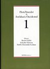
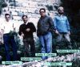
Equipo FVAO
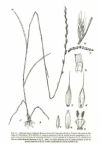
Micropyropsis tuberosa
Proyecto: Las Gramíneas
de Extremadura (c. 1991)
Director: J.A. Devesa, Universidad de Extremadura
Director: J.A. Devesa, Universidad de Extremadura
Capítulo:
- Devesa, J.A. & C. Romero Zarco (1991) Avena L., in J.A. Devesa (ed.). Las Gramíneas de Extremadura, págs. 84-89. Serie Monografías Botánicas. Universidad de Extremadura, Badajoz. ISBN 84-7723-094-3.
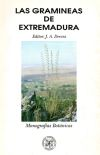
Proyecto: Flora Iberica
(1980-actualidad)
Dr. Santiago Castroviejo (Jardín Botánico de Madrid, CSIC, 1980-2009)
Dr. Carlos Aedo (Jardín Botánico de Madrid, CSIC, desde 2009 hasta 2021)
Este macroproyecto ha sido financiado mediante 11 fases sucesivas en las que han colaborado varias instituciones nacionales y extranjeras lideradas por el Jardín Botánico de Madrid.
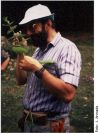
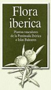
Coordinadores:Dr. Santiago Castroviejo (Jardín Botánico de Madrid, CSIC, 1980-2009)
Dr. Carlos Aedo (Jardín Botánico de Madrid, CSIC, desde 2009 hasta 2021)
Este macroproyecto ha sido financiado mediante 11 fases sucesivas en las que han colaborado varias instituciones nacionales y extranjeras lideradas por el Jardín Botánico de Madrid.
- Libros.-Publicaciones en el proyecto como
coeditor científico de libros:
- S. Talavera, C. Aedo, S. Castroviejo, A. Herrero, C. Romero Zarco, F.J. Salgueiro & M. Velayos (eds., 1999) Flora iberica, vol. VII(I) Leguminosae (partim). Real Jardín Botánico de Madrid. CSIC, Madrid. ISBN 84-00-06221-3.
- S. Talavera, C. Aedo, S. Castroviejo, C. Romero
Zarco, L. Sáez, F.J. Salgueiro & M. Velayos
(eds., 2000) Flora iberica,
vol. VII(II) Leguminosae (partim).
Real Jardín Botánico de Madrid. CSIC, Madrid. ISBN
84-00-07882-9.
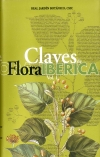
- S. Talavera, C. Aedo, S. Castroviejo, C. Romero Zarco, L. Sáez, A. Herrero, F.J. Salgueiro & M. Velayos (eds., 2001). Leguminosae, in S. Castroviejo, Claves de Flora iberica 1. Real Jardín Botánico, CSIC, Madrid: 542-686. ISBN 84-00-07932-9.
- S. Talavera, M.J. Gallego, C. Romero Zarco & A. Herrero (eds., 2010) Flora iberica, vol. XVII Butomaceae-Juncaceae. Real Jardín Botánico de Madrid. CSIC, Madrid. ISBN 978-84-00-09112-5.
- S. Talavera, C. Andrés, M. Arista, P. Fernández Piedra, M.J. Gallego, P. Ortiz, C. Romero Zarco, F.J. Salgueiro, S. Silvestre & A. Quintanar (eds., 2012) Flora iberica, vol. XI. Gentianaceae-Solanaceae. Real Jardín Botánico de Madrid. CSIC, Madrid. ISBN 978-84-00-09112-5.
- J.A. Devesa, C. Romero Zarco, T. Buira, A.
Quintanar & C. Aedo (eds., 2020) Flora
iberica, vol. XIX(I). Gramineae (partim).
Real Jardín Botánico de Madrid. CSIC, Madrid. ISBN:
978-84-00-10695-9.
- Romero Zarco, C., E. Rico, M.B.
Crespo, J.A. Devesa, T. Buira & C. Aedo (eds.,
2021) Flora iberica, vol. XIX(II).
Gramineae (partim). Real Jardín Botánico de Madrid.
CSIC, Madrid. ISBN: 978-84-00-10817-5.
- Capítulos.-Publicaciones como autor de capítulos concretos (familias y géneros):
- Talavera, S., C. Aedo, S. Castroviejo, C. Romero
Zarco, L. Sáez, J.F. Salgueiro & M. Velayos
(1999). Leguminosae, in S. Talavera &
al. (eds.) Flora Iberica 7(1): 3-10.
- Romero Zarco, C. (1999). Vicia L., in S. Talavera & al. (eds.) Flora Iberica 7(1): 360-417.
- Romero Zarco, C. (1999). Pisum L., in S. Talavera & al. (eds.) Flora Iberica 7(1): 482-486.
- Romero Zarco, C. (2001). Vicia, in I. Álvarez Fernández (comp.), Claves de Flora Iberica 1: 598-607.
- Romero Zarco, C. (2001). Pisum, in I. Álvarez Fernández (comp.), Claves de Flora Iberica 1: 618-619.
- Romero Zarco, C, S. Talavera & A. Herrero (eds., 2010). Juncaceae, in S. Talavera & al. (eds.) Flora Iberica 17: 122-224.
- Romero Zarco, C. (2010). Juncus L., in S. Talavera & al. (eds.) Flora Iberica 17: 123-187.
- Romero Zarco, C. & A. Quintanar (eds., 2012). Gentianaceae, in S. Talavera & al. (eds.) Flora iberica 11: 3-101.
- Romero Zarco, C. (2020). Clave de géneros, in J.A. Devesa & al. (eds.), Flora iberica19(1): 7-31.
- Devesa, J.A., A. Buira & C. Romero Zarco (eds.,
2020). Poeae R.Br., in J.A. Devesa & al.
(eds.), Flora iberica19(1): 113-627.
- Romero Zarco, C. (2020). Ventenata
Koeler, in J.A. Devesa & al. (eds.), Flora
iberica19(1): 156-159.
- Romero Zarco, C. (2020). Micropyropsis
Romero Zarco & Cabezudo, in J.A. Devesa & al.
(eds.), Flora iberica19(1): 374-376.
- Cantó, P., J.A. Devesa & C. Romero Zarco (2020).
Melica L., in J.A. Devesa & al.
(eds.), Flora iberica19(1): 52-68.
- L. Sáez, A. Ortiz & C. Romero Zarco (2020). Aira
L., in J.A. Devesa & al. (eds.), Flora
iberica19(1): 473-489.
- M. Míguez, P. Jiménez Mejías & C. Romero Zarco
(2020). Periballia Trin., in J.A.
Devesa & al. (eds.), Flora iberica19(1): 490-493.
- Cebrino J. & C. Romero Zarco (2020). Molineriella
Rouy, in J.A. Devesa & al. (eds.), Flora
iberica19(1): 493-498.
- Berjano R. & C. Romero Zarco (2020). Corynephorus P. Beauv., in J.A. Devesa & al. (eds.), Flora iberica19(1): 498-506.
- Romero Zarco, C. (2020). Helictochloa Romero Zarco, in J.A. Devesa & al. (eds.), Flora iberica19(1): 515-546.
- Romero Zarco, C. (2020). Avenula (Dumort.) Dumort., in J.A. Devesa & al. (eds.), Flora iberica19(1): 624-627.
- Romero Zarco, C. (2021). Clave de géneros [versión 2], in C. Romero Zarco & al. (eds.), Flora iberica19(2): 744-770.
- Romero Zarco, C. & J.A. Devesa (eds., 2021). Poeae
R.Br. (continuación), in C. Romero Zarco & al.
(eds.), Flora iberica19(2): 771-997.
- Romero Zarco, C. & L. Sáez (2021). Avena
L., in C. Romero Zarco & al. (eds.), Flora
iberica19(2): 772-792.
- Romero Zarco, C. (2021). Helictotrichon
Besser, in C. Romero Zarco & al. (eds.), Flora
iberica19(2): 797-814.
- Romero Zarco, C. (2021). Arrhenatherum
P. Beauv., in C. Romero Zarco & al. (eds.), Flora
iberica19(2): 814-825.
- Barberá, P., C. Aedo & C. Romero Zarco (2021). Trisetum Pers., in C. Romero Zarco & al. (eds.), Flora iberica19(2): 825-837.
- García-Castaño, J.L. & C. Romero Zarco (2021). Trisetaria Forsk., in C. Romero Zarco & al. (eds.), Flora iberica19(2): 837-848.
- Cebrino J. & C. Romero Zarco (2021). Lagurus L., in C. Romero Zarco & al. (eds.), Flora iberica19(2): 848-852.
- Romero Zarco, C. & L. Sáez (2021). Avellinia Parl., in C. Romero Zarco & al. (eds.), Flora iberica19(2): 878-882
- M. Míguez, P. Jiménez Mejías & C. Romero Zarco (2021). Airopsis Desv., in C. Romero Zarco & al. (eds.), Flora iberica19(2): 907-909.
- Romero Zarco, C. (2021). Dasypyrum (Coss. & Durieu) T. Durand, in C. Romero Zarco & al. (eds.), Flora iberica19(2): 1128-1131.
- Romero Zarco, C. (2021). Dactyloctenium Willd., in C. Romero Zarco & al. (eds.), Flora iberica19(2): 1371-1374.
- Libros autónomos:
- Romero Zarco, C, (2015). Las Gramíneas de la Península Ibérica e Islas Baleares. Claves ilustradas para la determinación de los géneros y catálogo preliminar de las especies. Monografías de Botánica Ibérica nº 15, Jolube Consultor Botánico y Editor, Jaca. ISBN: 978-84-943561-1-7.
- Devesa, J.A., G. Martínez Sagarra & C. Romero Zarco (2022). Las Gramíneas. Biología y Diversidad. UCOPress, Editorial Universidad de Córdoba (España). ISBN: 978-84-9927-669-4.
- Romero Zarco, C. (2026). Las
Gramíneas fáciles. Monografías de Botánica
Ibérica nº 28. Jolube Consultor Botánico y Editor,
Jaca. ISBN: 979-13-991389-1-7.
- Comunicaciones en congresos:
- Molineriella Rouy, a Mediterranean grass genus. Póster presentado en: 9th Biennial Conference of the International Biogeography Society, Málaga 12-ene-2019. Autores: J. Cebrino, J.L. García Castaño, M.Á. Ortiz & C. Romero Zarco.
- Applicability of molecular markers at species level in Airineae group. Póster presentado en: I Simposio Anual de Botánica Española celebrado en la Universidad de Sevilla, 7/8-feb-2020. Autores: A.M. Márquez Reyes, C. Romero Zarco, L. Sáez, J. López-Alvarado, P. Fraga, R. Berjano & M.A. Ortiz
- Speciation processes in annual plants, the genus Aira (Poaceae) in the Iberian Peninsula and the Balearic Islands. Póster presentado en: SESBE VII Biennial Congress of the Spanish Society for Evolutionary Biology, Sevilla, España. 2020. Autores: M.Á. Ortiz, L. Sáez, J. López-Alvarado, P. Fraga, R. Berjano, C. Romero-Zarco.
- Resumen de Flora iberica: 10 libros, 31 capítulos de libro y 3 comunicaciones en congresos.
- Borradores y versiones previas a la impresión (preimpresos o preprints):
- Flora iberica XIX(I) - Disponibles
en Researchgate
- Berjano, R. & C. Romero-Zarco - El género Corynephorus (Poaceae: Airinae) en la Península Ibérica e Islas Baleares - Borrador para Flora iberica XIX, versión 3) - DOI: 10.13140/RG.2.2.22440.26880
- Cebrino, J. & C. Romero-Zarco - El género Molineriella (Poaceae: Airinae) en la Península Ibérica - Borrador para Flora iberica XIX, versión 6 - DOI: 10.13140/RG.2.2.20680.78087
- Míguez, M., P. Jiménez-Mejías & C. Romero-Zarco - El género Periballia (Poaceae: Airinae) en la Península Ibérica - Borrador para Flora iberica XIX, versión 4 - DOI: 10.13140/RG.2.2.13425.94567
- Romero-Zarco, C. - El género Ventenata
(Poaceae: Poinae) en la Península Ibérica - Borrador
para Flora iberica XIX, versión 3 - DOI:
10.13140/RG.2.2.27611.21286
- Romero-Zarco, C. - El género Micropyropsis (Poaceae: Loliinae) en la Península Ibérica - Borrador para Flora iberica XIX, versión 3 - DOI: 10.13140/RG.2.2.19389.72160
- Romero-Zarco, C. - El género Avenula
(Poaceae: Poeae) en la Península Ibérica - Borrador
para Flora iberica XIX, versión 4c - DOI:
10.13140/RG.2.2.27964.28800
- Romero-Zarco, C. - El género Helictochloa Romero Zarco (Poaceae: Pooideae: Airinae) en la Península Ibérica e Islas Baleares - Borrador para Flora iberica XIX(1), versión nº 12 - DOI: 10.13140/RG.2.2.23773.26088
- Flora iberica XIX(II) - Disponibles en Researchgate
- Cebrino, J. & C. Romero-Zarco - El género Lagurus L. (Poaceae: Pooideae: Aveninae) en la Península Ibérica e Islas Baleares - Borrador para Flora iberica XIX, versión 3 - DOI: 10.13140/RG.2.2.36421.91361
- Romero-Zarco, C. - El género Helictotrichon (Poaceae: Poeae: Aveninae) en la Península Ibérica - Borrador para Flora iberica XIX, versión 5 - DOI: 10.13140/RG.2.2.25527.98729 (incluye Pseudarrhenatherum Rouy)
- Romero-Zarco, C. - El género Arrhenatherum P. Beauv. (Poaceae: Poeae: Aveninae) en la Península Ibérica e Islas Baleares - Borrador para Flora iberica XIX, versión 8 - DOI: 10.13140/RG.2.2.10914.58567
- Romero-Zarco, C. & L. Sáez - El género Avena L. (Poaceae: Poeae: Aveninae) en la Península Ibérica e Islas Baleares - Borrador para Flora iberica XIX, versión 7b - DOI: 10.13140/RG.2.2.34269.97763
Otros géneros no listados aquí están disponibles en Gramina iberica
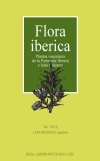
Flora iberica 7(1)
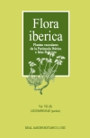
Flora iberica 7(2)
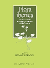
Flora iberica 17
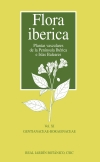
Flora iberica 11
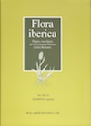
Flora iberica 19(1)
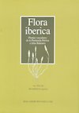
Flora iberica 19(2)
Las Gramíneas de la
Península Ibérica
Las Gramíneas. Biología y Diversidad

Las Gramíneas fáciles
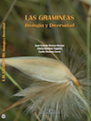
Las Gramíneas. Biología y Diversidad
Las Gramíneas fáciles
Coordinador: B. Valdés,
Universidad de Sevilla.
- Capítulos.-Contribuciones en el libro de B. Valdés & al. (eds., 2002) Catalogue des Plantes Vasculaires du Nord du Maroc, incluant des clés d'identification. CSIC, Madrid. ISBN 84-00-08072-8
- Volumen 1: 5 géneros de Leguminosae (Leguminosas); páginas 302-310; 316-317; 348-355:
- Vicia; Lens; Pisum; Medicago; Trigonella.
- Volumen 2: edición y clave de géneros de la familia Gramineae (Gramíneas), págs. 759-780.
- Volumen 2: 55 géneros de Gramineae, págs. 784-785; 787-788; 798-799; 801-813; 815-828; 831; 833; 835-836; 842; 845-851:
| Aeluropus | Aegilops | Aira | Airopsis | Ammochloa |
| Ammophila | Apera | Arrhenatherum | Avena | Avenula* |
| Brachyaria | Brachypodium | Briza | Bromus | Catabrosa |
| Cenchrus | Corynephorus | Crypsis | Cynodon | Dactylis |
| Dasypyron | Digitaria | Echinaria | Echinochloa | Elymus |
| Eragrostis | Eremopyrum | Gaudinia | Hainardia | Helictotrichon |
| Hemarthria | Holcus | Hordeum | Koeleria | Lamarckia |
| Mibora | Milium | Molineriella | Panicum | Parapholis |
| Paspalum | Paspalidium | Pennisetum | Phalaris | Pseudarrhenatherum |
| Rostraria** | Sclerochloa | Sesleria | Setaria | Spartina |
| Sporobolus | Tetrapogon | Trisetaria | Trisetum | Wangenhemia |
** Incluyendo Avellinia
- Resumen de Flora de
Marruecos: 61 capítulos del libro.
Nota.- Sobre flora de Marruecos también hay publicaciones en el apartado IV.
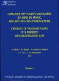
Catálogo de la flora
del Rif
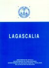
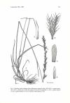
Gaudinia valdesii
Blanca López, Gabriel ;
Cabezudo Artero, Baltasar ; Cueto Romero, Miguel ;
Fernández López, Carlos & Morales Torres, María de la
Concepción (eds., 2009). Flora Vascular de
Andalucía Oriental. Universidades de Almería,
Granada, Jaén y Málaga - Consejería de Medio Ambiente,
Junta de Andalucía, Sevilla. ISBN: 9788492807123
(obra completa). Hay una segunda edición publicada en 2011.
- G. Blanca & al. (2009, eds.) Flora Vascular de Andalucía Oriental. Volumen 1. Ranunculaceae-Polygalaceae. Consejería de Medio Ambiente, Junta de Andalucía, Sevilla
- Capítulos.-Contribuciones al libro en la Familia Poaceae (Gramineae):
- Romero Zarco, C. (2009) Avena L., en G. Blanca & al. (eds.) Flora Vascular de Andalucía Oriental 1: 321-323
- Romero Zarco, C. (2009) Avenula (Dumort.) Dumort., en G.
Blanca & al. (eds.) Flora Vascular de Andalucía
Oriental 1: 323-326 [incluyendo Helictochloa]
- Romero Zarco, C. (2009) Helictotrichon Besser, en G. Blanca & al. (eds.) Flora Vascular de Andalucía Oriental 1: 326-328
- Romero Zarco, C. (2009) Arrhenatherum P. Beauv., en G. Blanca & al. (eds.) Flora Vascular de Andalucía Oriental 1: 328-329
- Romero Zarco, C. & A.T. Romero (2009) Deschampsia P. Beauv., en G. Blanca & al. (eds.) Flora Vascular de Andalucía Oriental 1: 338
- Romero
Zarco, C. & A.T. Romero (2009) Avenella Drejer,
en G. Blanca & al. (eds.) Flora Vascular de
Andalucía Oriental 1: 339
- G. Blanca & al. (2009, eds.) Flora Vascular de Andalucía
Oriental. Volumen 2.
Ranunculaceae-Polygalaceae. Consejería de Medio
Ambiente, Junta de Andalucía, Sevilla
- Capítulos.-Contribuciones al libro en la
Familia Fabaceae:
- Romero Zarco, C. (2009) Vicia L., en G. Blanca & al. (eds.) Flora Vascular de Andalucía Oriental 2: 360-376
- Romero Zarco, C. (2009) Pisum L., en G. Blanca & al. (eds.) Flora Vascular de Andalucía Oriental 2: 386
- Romero Zarco, C. (2009) Medicago L., en G. Blanca & al. (eds.) Flora Vascular de Andalucía Oriental 2: 417-427
- G. Blanca & al. (2011, eds.). Claves de la Flora de Andalucía Oriental. Universidades de Granada, Almería, Jaén y Málaga. Granada. 802 págs.
- Capítulos.-Contribuciones en este libro: las
mismas publicadas en los volúmenes 1 y 2 de la obra de
referencia (9 capítulos).
- Resumen de Flora
Vascular de Andalucía Oriental: 9 capítulos del
libro.
Nota: sobre flora de Andalucía hay también publicaciones en otros apartados.
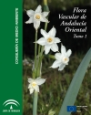
Flora Vascular de Andalucía Oriental. Vol. 1
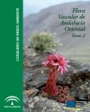
Flora Vascular de Andalucía Oriental. Vol. 2
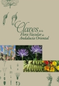
Claves Fl. And. Oriental
Proyecto: Estudio
biogeográfico de la flora de Andalucía y sus relaciones
con la del N. de Marruecos ("Biogeo", 2002-2005)
Director: B. Valdés, Universidad de Sevilla (REN-2002-0448-CO3-03).
Director: B. Valdés, Universidad de Sevilla (REN-2002-0448-CO3-03).
- Contribución al proyecto:
- Familia Leguminosas: género Vicia (en colaboración con M.A. Mateos)
- Familia Gramíneas: género Phalaris (en colaboración con M.A. Mateos)
Nota: los resultados de este proyecto no
han sido publicados de forma directa.
- Exsiccata (colecciones de plantas distribuídas a los principales herbarios con un texto explicativo en forma de folleto):
- Valdés, B., S. Talavera, J.A. Devesa, M.J. Gallego, J. Pastor & C. Romero Zarco (1981). Herbarium Universitatis Hispalensis Flora Selecta. Centuria I. Universidad de Sevilla.
- Valdés, B., S. Talavera, J.A. Devesa, J. Pastor M.J. Gallego, C. Romero Zarco, S. Silvestre, P. García Murillo, J.C. Diosdados, Z. Díaz Lifante & J.A. Mejías (1992). Herbarium Universitatis Hispalensis Flora Selecta. Centuria II. Universidad de Sevilla.
- Valdés, B. & al. (1993). Herbarium
Universitatis Hispalensis Flora Selecta. Centuria
III. Universidad de Sevilla.

- Resumen de otras
investigaciones florísticas: 3 folletos de exsiccata.
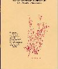
Flora Selecta II
Proyecto AFLIBER: Atlas de la
Flora Vascular de la Península Ibérica (2018-2020) -
CGL2017-86926-P, dirigido por J.C. Moreno-Saiz
- Ramos-Gutiérrez, I., H. Lima, S. Pajarón, C. Romero-Zarco, L. Sáez, L. Pataro, R. Molina-Venegas, M.Á. Rodríguez & J.C. Moreno-Saiz (2021). Atlas of the vascular flora of the Iberian Peninsula biodiversity hotspot (AFLIBER). Global Ecology and Biogeography. 30: 1951-1957. DOI: 10.1111/geb.13363
- Ramos-Gutiérrez, I,
Acedo, C., Alfaro-Saiz, E., Arista, M., Arroyo, J.,
Guardiola, M., Jiménez-Megías, P., Mateo, R.G., Mateo,
G., Peralta, J., Pérez-Latorre, A.V., Romero-Zarco,
C., Sáez, L., Salazar-Mendías, C., Serra-Laliga,
L. & Moreno-Saiz, J.C. (2026). AFLIBER v.2:
Updating the Iberian database of vascular plant
distributions. Mediterranean Botany 47(2),
e106425. https:// https://doi.org/10.5029/mbot.106425.
- Resumen: 2 artículo en revista
Resumen de los proyectos sobre Flora silvestre de la
región mediterránea (161 publicaciones):
- Coeditor científico en 7 libros
- Autor o coautor de 3 libro
- Autor o coautor de 146 capítulos en 9 libros diferentes
- Coautor de 2 artículo
- Coautor de 3 folletos
- Coautur de 3 comunicaciones en congresos
Resultados
de
la tesis doctoral
titulada:
"Estudio taxonómico de las avenas perennes (géneros Avenula, Helictotrichon, Arrhenatherum y Pseudarrhenatherum) en la Península Ibérica y Baleares". Universidad de Sevilla, Facultad de Biología, defendida el día 11 de julio de1983. Dirigida por S. Talavera (ponente: B. Valdés).
"Estudio taxonómico de las avenas perennes (géneros Avenula, Helictotrichon, Arrhenatherum y Pseudarrhenatherum) en la Península Ibérica y Baleares". Universidad de Sevilla, Facultad de Biología, defendida el día 11 de julio de1983. Dirigida por S. Talavera (ponente: B. Valdés).
- Romero Zarco, C. (1984). Revisión del género Helictotrichon Besser ex Schultes & Schultes fil. (Gramineae) en la Península Ibérica. I. Estudio taxonómico. Anales Jardín Bot. Madrid 41(1): 97-124. CSIC, Madrid
Helictotrichon sedenense
subsp. gervaisii Helictotrichon filifolium
subsp. arundanum
- Romero Zarco, C. (1984). Revisión taxonómica del género Avenula (Dumort.) Dumort. (Gramineae) en la Península Ibérica e Islas Baleares. Lagascalia 13(1): 39-146. Universidad de Sevilla.
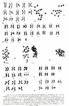
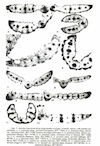
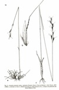
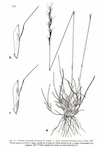
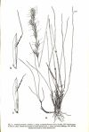
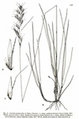
- Romero Zarco, C. 1985). Revisión del género Arrhenatherum Beauv.
(Gramineae) en la península Ibérica. Acta Bot. Malacitana 10:
123-154. Universidad de Málaga.
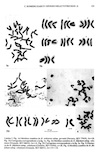
- Romero Zarco, C. (1985) Revisión del género Helictotrichon Besser
ex Schultes & Schultes fil. (Gramineae) en la
Península Ibérica. II. Estudio experimental. Anales Jardín Bot. Madrid
42(1): 133-154. CSIC, Madrid.
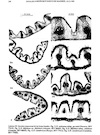
- Romero Zarco, C. (1985). Estudio taxonómico del género Pseudarrhenatherum Rouy en la Península Ibérica. Lagascalia 13(2): 255-273. Universidad de Sevilla.
- Publicación de 5 monografías sobre taxonomía de gramíneas
- Descripción de 13
taxones nuevos para la ciencia: 7 subespecies,
5 variedades y una especie híbrida.
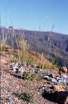
Avenula laevis
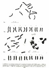
Cariología
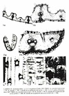
Anatomía
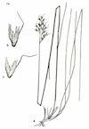
Lámina del género Pseudarrhena-therum
"Taxonomía
y sistemática del género Trisetum
Pers. en el Paleártico y de la subtribu
Aveninae (Poaceae: Pooideae: Poeae)". Universidad
Autónoma de Madrid, 2018. Dirigida
por Carlos Aedo Pérez y Carlos Romero Zarco
- Barberá, P., C. Romero-Zarco & C. Aedo (XII-2017a). Taxonomic revisión of Trisetum Section Acrospelion (Poaceae: Pooideae: Aveninae) from Eurasia. Systematic Botany 42(4): 754-781.
- Barberá, P., C. Romero-Zarco & C. Aedo (XII-2017b). Taxonomic Revision of Trisetum Section Sibirica (Poaceae: Pooideae: Aveninae). Systematic Botany 42(4): 782-806.
- Barberá,
P., C. Romero-Zarco & C. Aedo (IX-2018).
Taxonomic Revision of Trisetum sect. Trisetum
from Eurasia and North Africa. Ann. Missouri
Bot. Gard. 103: 350392.
- Publicación en revistas especializadas de 3 monografías sobre otras tantas secciones del género.
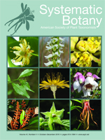
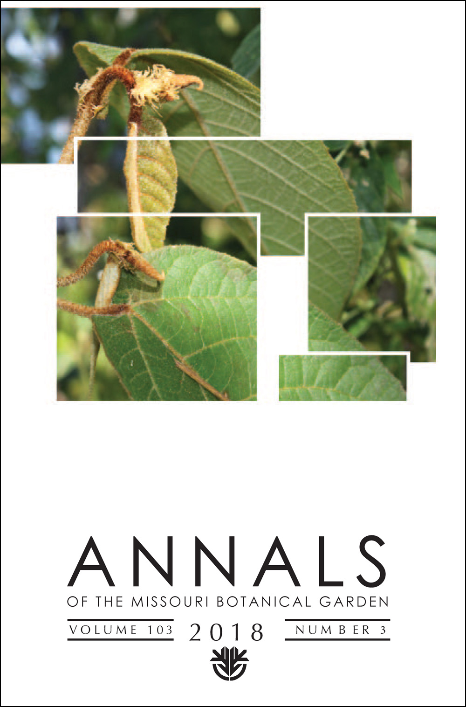
- Romero Zarco, C. (1988). Diagramas de hibridación en Arrhenatherum Beauv. (Gramineae). Lagascalia 15(extra): 417-422. Universidad de Sevilla.
- Romero Zarco, C. (1989). Acerca de Agrostis koelerioides Romo. Anales Jardín Bot. Madrid 45(2): 568-569. CSIC, Madrid.
- Romero Zarco, C. (1989). Notas agrostológicas sobre la flora balear. Collectanea Bot. (Barcelona) 17(2): 255-258. Instituto Botánico de Barcelona.
- Romero Zarco, C. (1989). Tipificación de Avena pratensis
subsp. amethystea Br.-Bl. Anales Jardín Bot. Madrid 47(1):
261-262. CSIC, Madrid ["1990"].
- Romero Zarco, C. (1990). Claves para la identificación de los géneros de Gramíneas de la Península Ibérica e Islas Baleares. Lagascalia 15(2): 223-261. Universidad de Sevilla.
- Romero Zarco, C. (1990). Las avenas del grupo barbata en la
Península Ibérica y Baleares. Lagascalia 16(2): 243-268.
Universidad de Sevilla.
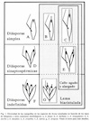
- Romero Zarco, C. (1993). Observaciones sobre las Avenula del grupo marginata en Andalucía. Acta Bot. Malacitana 18: 147-151. Universidad de Málaga.
- Romero Zarco, C. (1994). Las avenas del grupo "sterilis" en la Península Ibérica y regiones adyacentes del SW de Europa y NW de África. Lagascalia 17(2): 277-309. Universidad de Sevilla
- Romero Zarco, C. (1996). Sinópsis del género Avena L. (Poaceae, Aveneae) en España peninsular y Baleares. Lagascalia 18(2): 171-198. Universidad de Sevilla.
- Romero Zarco, C. (2007). Helictotrichon devesae, a new endemic
grass species from Castilla-La Mancha
(Central Spain). Anales Jardín Bot. Madrid 64(2): 205-211. CSIC, Madrid.
- Romero-Zarco, C. (2011). Helictochloa Romero Zarco, a new genus of aot grass. Candollea 66(1): 87-103.
- Sáez, L., C. Aedo & C. Romero-Zarco (II-2017).
Proposal to conserve the name Avena sterilis (Poaceae)
with a conserved type. Taxon 66(1): 203-204. Enlace a la
versión del editor
- Cebrino Cruz, J. & C. Romero-Zarco (XII-2017). Revisión taxonómica del género Molineriella Rouy (Gramineae: Poeae: Airinae) en la Península Ibérica. Acta Botanica Malacitana 42(2): 203-214.
- Sáez, L., J. López-Alvarado, P. Fraga, R. Berjano, M.Á. Ortiz & C. Romero-Zarco (2020). Two New Species of Aira (Poaceae) from the Iberian Peninsula and the Balearic Islands. Systematic Botany 45(1): 7584.
- Romero-Zarco, C. (2023). El género Bromus L. (Poceae) en la flora ibérica: notas críticas. Acta Botanica Malacitana, 48: 14-30. https://doi.org/10.24310/abm.v48i.16220.
- Romero
Zarco, C., M. Chambouleyron, J.F. Léger & A. Tanji
(2025). Contribution à la connaisance du genre Avena
L. (Poaceae) au Maroc. Acta Botanica Malacitana
50, 20942. DOI:
https://doi.org/10.24310/abm.v50.2025.20942
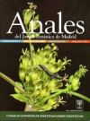
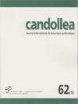
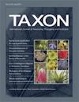
Resumen de los trabajos sobre taxonomía
de Gramíneas:
- 24 artículos, de los cuales 9 son monografías de géneros completos para la Península Ibérica o España peninsular y Baleares y 3 son monografías de ámbito continental.
- Romero Zarco, C. (1997).
Typification of two species of Vicia L.
(Fabaceae) described by Boissier in N. Africa.
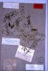
Flora Mediterranea 7: 107-113. OPTIMA & Herbarium Mediterraneum Panormitanum, Palermo. - Romero Zarco, C.
(1998). Tipificación e interpretación de los taxones
del género Vicia
L. (Fabaceae) descritos o citados por Pérez
Lara en Florula Gaditana (1892). Lagascalia 20(2):
277-290. Universidad de Sevilla.
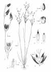
- Romero Zarco, C. (2010). El género Juncus L. (Juncaceae) en Andalucía (España): datos sobre la distribución regional de sus especies. Acta Botanica Malacitana 35: 37-55.
- Romero-Zarco, C. & V.J. Arán (2013). Juncus fernandez-carvajaliae sp. nov. (Juncaceae) from Castilla-La Mancha, central Spain. Nordic Journal of Botany 31: 190-193.
- Sáez,
L., G. Bibiloni, J. Rita, L. Gil, E. Moragues, C.
Romero Zarco, J. Vicens
(2015). Additions and amendments
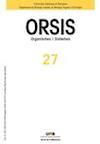
to the flora of the Balearic Islands. Orsis 29: 173-192. - Jiménez-Mejías,
P. & al. (más de 1500 coautores). (2024).
Protecting stable biological nomenclatural systems
enables universal communication: A collective
international appeal. BioScience, biae043,
https://doi.org/10.1093/biosci/biae043.
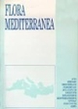
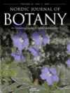
(gramíneas, juncáceas, leguminosas
y otras famílias)
- Serie "Notas taxonómicas y
corológicas sobre la flora de Andalucía occidental".
Revista Lagascalia.
Universidad de Sevilla
- Aparicio, A. & C. Romero Zarco (1986). Nota breve 188. Vicia hirsuta. Lagascalia 14(1): 142.
- Romero Zarco (1983a). Nota breves. 86. Helictotrichon sarracenorum. Lagascalia 11(1): 115.
- Romero Zarco
(1983b). Nota breves:.87. Avenula gervaisii.
Lagascalia 11(1):
115.
- Romero Zarco (1984a). Notas breves. 139. Avena fatua. Lagascalia 12(2): 276
- Romero Zarco
(1984b). Notas breves. 140. Avena
x haussknechtii. Lagascalia 12(2):
276-277
- Romero Zarco (1986a). El género Hyparrhenia N.J. Anderson (Gramineae) en Andalucía occidental. Lagascalia 14(1): 121-124.
- Romero Zarco (1986b). Nota breve 187. Vicia lutea subsp. cavanillesii (Martínez) Romero Zarco, comb. & stat. nov. Lagascalia 14(1): 141-142.
- Romero Zarco (1986c). Nota breve 194. Medicago polymorpha subsp. polycarpa (Willd.) Romero Zarco, comb. nova. Lagascalia 14(1): 146.
- Romero Zarco (1986d). Notas breves [14 notas]. Lagascalia 14(1): 166-174.
|
|
- Romero Zarco & B. Cabezudo (1983). Micropyropsis, género nuevo de Gramíneae. Lagascalia 11(1): 94-99.
- Romero Zarco & A. Charpin (1986). Nota breve 247. Eragrostis curvula. Lagascalia 14(1): 172-173.
- Romero Zarco & J.A. Devesa (1983). Nota breve 85. Bromus unioloides. Lagascalia 11(1): 114-115.
- Serie "Notas breves". Anales del Jardín
Botánico de Madrid. CSIC, Madrid
- Romero Zarco (1983). Sobre la presencia en España de Avena eriantha Dur. Anales Jard. Bot. Madrid 40(1): 284
- Romero Zarco (1985). Acerca de Rostraria salzmannii (Boiss. & Reuter) J.Holub en la Península Ibérica. Anales Jard. Bot. Madrid 41(2): 462-463
- Romero Zarco & A. Aparicio (1985). Medicago rugosa Desr., nueva cita para Andalucía. Anales Jard. Bot. Madrid 42(1): 249-250.
- Serie: "Notas para la flora de Andalucía y del Rif" en Lagascalia, Universidad de Sevilla.
- Albarreal, J. & C. Romero Zarco (1993). 26. Novedades florísticas para la Campiña y las Sierras Subbéticas. Lagascalia 17(1): 190-193.
- Serie "Floristic Biodiversity of N. Morocco...", en Lagascalia. Universidad de Sevilla.
- Romero Zarco, C. (1996). Notas sobre el género Medicago L. en el N de Marruecos. Lagascalia 18(2): 265-266.
- Romero Zarco, C. (1996). Contribución al conocimiento de las gramíneas del N de Marruecos. Lagascalia 18(2): 310-321.
- Devesa, J.A. & C. Romero Zarco (1996). Micropyropsis tuberosa. Lagascalia 18(2): 324.
- Serie "Notulae taxinomicae...", en Anales del Jardín Botánico de Madrid. CSIC, Madrid.
-
Romero Zarco, C. (1998). Tipificación de Vicia parviflora Cav. (Fabaceae). Anales Jardín Bot. Madrid 55(2): 491-493.
- Romero Zarco, C. (1998). Lectotipificación de Vicia amphicarpa L., V. benghalensis L. y V. sativa var. nigra L. (Leguminosae). Anales Jardín Bot. Madrid 56(1): 178-179.
- Romero Zarco, C. (1998). Vicia leucantha Biv. (Leguminosae) en Baleares. Anales Jardín Bot. Madrid 56(1): 180-181.
- Romero Zarco, C. (1999). Especies de Vicia subgen. Cracca (Dumort.) Peterm. (Leguminosae) mal interpretadas en las floras básicas de la Península Ibérica. Anales Jadín Bot. Madrid 57(1): 220-225.
- Romero Zarco, C. & J. Albarreal (1994). Thymelaea lythroides Barrate & Murb. (Thymelaeaceae), planta europea. Anales Jardín Bot. Madrid 52(1): 125.
- Serie: "Contribuciones a la flora vascular de Andalucía (España)" en Acta Botanica Malacitana. Universidad de Málaga.
- Albarreal, J. & C. Romero Zarco (2004). 98. Novedades corológicas para la flora de Andalucía occidental (Sevilla-Cádiz). Acta Bot. Malacitana 29: 300-304.
- Muñoz Rodríguez, A., J.A. Devesa & C. Romero Zarco (2006). 119. Leersia hexandra Sw. (Oryzeae, Poaceae) en Andalucía. Acta Bot. Malacitana 31: 198-199.
- Romero Zarco, C. (2004). 99. Sobre algunos neófitos y otras citas interesantes para Andalucía occidental. Acta Bot. Malacitana 29: 305-310.
- Romero Zarco, C. & J. Peñas de Giles (2006). 118. Vicia suberviformis Maire, nueva especie para la flora europea. Acta Bot. Malacitana 31: 195-197.
- Serie: "Fragmentos Taxonómicos, Corológicos, Nomenclaturales y Fitocenológicos" en Acta Botanica Malacitana
- Romero Zarco, C. (2008). 178. Juncus rechingeri Snogerup, nueva especie para la flora europea. Acta Botanica Malacitana 33: 339-341. Universidad de Málaga.
- Serie: "Contribuciones a la flora vascular de Marruecos" en Acta Botanica Malacitana
- Romero Zarco, C. (2009a). 15. Contribución al conocimiento del género Juncus (Juncaceae) en el Norte de Marruecos. Acta Botanica Malacitana 34: 295-302.
- Romero-Zarco,
C. (2013a). 20. Notas sobre las gramíneas del N
de Marruecos.
Acta Botanica
Malacitana 38: 224-227.
- Serie: "Contribuciones a la flora vascular de Andalucía (España)" en Acta Botanica Malacitana
- Romero Zarco, C. (2009b). 152. Luzula lactea (Link) E. Mey. (Juncaceae), ¿en Andalucía?. Acta Botanica Malacitana 34: 290-292.
- Romero Zarco, C. (2012). 168. Juncus maroccanus Kirschner (Juncaceae), yet to be found in Europe. Acta Botanica Malacitana 37: 229-230.
- Serie: "Notulae taxinomicae, chorologicae, nomenclaturales, bibliographicae aut philologicae opus 'Flora iberica' intendentes" en Acta Botanica Malacitana
- Romero-Zarco, C. (2013b). 20. Clasificación infragenérica del género Helictochloa Romero Zarco (Poaceae). Acta Bot. Malacitana 38: 253-255.
- Romero-Zarco, C. (2014a). 26. Algunas citas de gramíneas de interés para la flora andaluza. Acta Bot. Malacitana 39: 300-302.
- Romero-Zarco, C. (2014b). 29. Notas taxonómicas sobre el género Helictochloa Romero Zarco (Poaceae). Acta Bot. Malacitana 39: 308-310.
- Romero-Zarco (2015). 38. Variedades enanas del complejo de Helictochlo albinervis-H. marginata. Acta Bot. Malacitana 40: 292-295.
- Notas
cortas en Acta Botánica Malacitana (a
partir del nº 42, nuevo portal web)
- Romero-Zarco, C. (XII-2017). Notas sobre gramíneas del N de Marruecos. II. Acta Botanica Malacitana 42(2): 327-332.
- Romero-Zarco, C. & L. Sáez (2018). Notas taxonómicas sobre el género Avellinia (Poaceae: Poeae: Aveninae). Acta Botanica Malacitana 43: 167-169.
- Romero-Zarco, C., J.L. García-Castaño & R. Berjano Pérez (2019). Notas nomenclaturales sobre algunas gramíneas mediterráneas. Acta Botanica Malacitana 44: 93-97.
- Romero-Zarco, C.
(2019). Medicago lesinsii E.
Small, (Leguminosae), nueva cita para la flora
ibérica.
Acta Botanica Malacitana 44: 83-85.
- Romero-Zarco, C. (2021). Acerca de unas presuntas novedades taxonómicas y corológicos de gramíneas para Extremadura (España). Acta Botanica Malacitana 46: DOI: https://doi.org/10.24310/abm.v46i.11953
- Romero-Zarco, C., L. Sáez & A.T. Romero-García (2021). Notas sobre algunas gramíneas (Poaceae: Poeae) de la flora ibérica. Acta Botanica Malacitana 46: DOI: https://doi.org/10.24310/abm.v46i.11925
- Salvador-Menéndez, J.A., A. Campano & C. Romero-Zarco (2021). Novedades florísticas para las comarcas de El Aljarafe y La Vega (Sevilla, España). Acta Botanica Malacitana 46: DOI: https://doi.org/10.24310/abm.v46i.12326
- Sáez, L., E. Mestre, M. Vicens & C. Romero-Zarco (2021). Medicago soleirolii (Fabaceae), especie a excluir de la flora ibero-balear. Acta Botanica Malacitana 46: DOI: https://revistas.uma.es/index.php/abm/article/view/12838
- Romero-Zarco, C. & L. Sáez (2022). Identidad de los taxones del complejo de Avena barbata Link (Poaceae) presentes en la región Mediterránea. Acta Botánica Malacitana 47: DOI: https://doi.org/10.24310/abm.v47i.14662. Enlace: https://revistas.uma.es/index.php/abm/article/view/14662
- Romero-Zarco, C. M., Chambouleyron, M., & Léger, J.-F. (2023). Nouvelles graminées (Poaceae) pour la flore du Maroc. Acta Botanica Malacitana, 48: 140-144. https://doi.org/10.24310/abm.v48i.16508
- Ferrer Gallego, P.P.
& Romero Zarco, C. (2026). On Calamagrostis
Adans. and the threat of Arundo
L.
(Gramineae) in Adansons Familles des Plantes (1763). Acta Botanica Malacitana 51: 24201. DOI: https://doi.org/10.24310/abm.51.2026.24201.
- Notas en otras revistas:
- Charpin, A. & C. Romero Zarco (1982). Sobre la presencia de Ehrharta calycina Smith en España. Saussurea 13: 187-188. Suiza.
- Romero Zarco, C. (2023). Bromus cincinnatus (Poaceae): perennial oat-grass or annual brome-grass? Mediterranean Botany 44, e84748.
- Romero
Zarco, C. (2026). What is Bromus rubens
subsp. kunkelii? 1), e101684
Mediterranean Botany 47(1), e101684


Vicia
suberviformis
Thymelaea lythroides
Erodium
tordylioides
Mediterranean Botany

Ilustración de Barrelier (1714: icon. 24)

Holotipo de Bromus madritensis subsp.kunkelii H. Scholz
Mediterranean Botany
Ilustración de Barrelier (1714: icon. 24)
Holotipo de Bromus madritensis subsp.kunkelii H. Scholz
Proyecto: Atlas Cariológico de Andalucía Occidental
(1987-1989)
Director: Julio Pastor
- Colaboración en el libro: J. Pastor (ed., 1993). Atlas cromosómico de la Flora vascular de Andalucía occidental. Universidad de Sevilla
Artículos sobre Cariosistemática de
plantas vasculares:
- Serie "Números
cromosómicos para la flora española",
revista Lagascalia.
Universidad de Sevilla
- Devesa, J.A. & C. Romero Zarco (1981).
Números cromosómicos para la flora española.
Números 188-196. Lagascalia 10(2): 227-230.
- Romero Zarco, C. & J.A. Devesa (1983).
Números cromosómicos para la flora española.
Números 276-283. Lagascalia 12(1): 124-128.
- Luque, T., C. Romero Zarco & J.A. Devesa
(1984). Números cromosómicos para la flora
española. Números 321-330. Lagascalia 12(2):
286-290.
- Devesa,
J.A. & C. Romero Zarco (1984). Números
cromosómicos para la flora española. Números
331-336 [erratum: "337"]. Lagascalia 12(2):
290-292.
- Romero Zarco, C. (1984). Números cromosómicos
para la flora española. Números 337-341. Lagascalia 12(2):
292-294.
- Romero Zarco, C. (1988). Números
cromosómicos para la flora española. Números
516-527. Lagascalia
15(1): 119-124.
- Serie "Números cromosomáticos de plantas occidentales", revista Anales del Jardín Botánico de Madrid. CSIC, Madrid.
- Romero Zarco, C. (1988) Números
cromosomáticos de plantas occidentales. Números
472-486. Anales
Jardín Bot. Madrid. 45(1): 273-279.
- Serie "IOPB
Chromosome Number Reports", revista Taxon. Utrecht,
Holanda.
- Luque, T., C. Romero Zarco & J.A. Devesa
(1983). IOPB Chromosome Number Reports LXXIX. Taxon 32(2):
321.
- Otros artículos de Cariosistemática:
- Romero Zarco, C. (1986). A
new method for stimating caryotype asymmetry. Taxon 35(3):
526-530. Utrecht, Holanda.
Resumen de los trabajos sobre
Cariosistemática de plantas vasculares (10 publicaciones):
- Colaboración en un libro
- 8 artículos de recuentos cromosómicos en mitosis o
meiosis con unas 60 especies estudiadas
- Un artículo sobre metodología de Cariosistemática.
Proyecto: Planes de Recuperación,
Conservación y Manejo de Especies Vegetales Amenazadas de
la Flora Andaluza (1992-1994)
Director: B. Valdés
- Romero Zarco, C. (1996). Contribución al conocimiento de las gramíneas endémicas de la Península Ibérica. Anales Jardín Bot. Madrid 54(2): 528-532. CSIC, Madrid.
- Romero Zarco, C. (1999) Micropyropsis tuberosa. En G. Blanca & al., Libro Rojo de la Flora Silvestre Amenazada de Andalucía. Tomo 1: Especies en peligro de extinción. Consejería de medioAmbiente, Junta de Andalucía. ISBN 84-89650-75-6.
- Colaboración en: Varios Autores (2000). Lista Roja de la Flora Vascular Española (valoración según categorías UICN). Conservación Vegetal 6 (extra): 11-38.
- Colaboración en: Cabezudo,
B. & al. (2005). Lista Roja de
International Union for Conservation of Nature and Natural
Resources
Resumen de flora amenazada: 3 artículos, 1
capítulo de libro y 2 colaboraciones en libros- Romero Zarco, C. (2018). Helictochloa
lusitanica. The IUCN Red List of
Threatened Species 2018: e.T71722162A71722282. http://dx.doi.org/10.2305/IUCN.UK.2018-1.RLTS.T71722162A71722282.en
Enlace alternativo: https://idus.us.es/xmlui/handle/11441/78364
- Romero Zarco, C., Carapeto, A., Pinto Cruz, C.,
García Murillo, P.G., Ríos Ruiz, S. & Fraga i
Arquimbau, P. (2018). Juncus
fernandez-carvajaliae. The IUCN Red List
of Threatened Species 2018: e.T82123704A82123805. http://dx.doi.org/10.2305/IUCN.UK.2018-1.RLTS.T82123704A82123805.en
Enlace alternativo: https://idus.us.es/xmlui/handle/11441/78383
Libro Rojo
Director: Benito Valdés
(Univ. de Sevilla)
- Colaboración en el libro: B. Valdés & al. (eds., 1987). Atlas Polínico de Andalucía occidental. Universidad de Sevilla
Directora: Paloma
Cariñanos (Univ. de Granada)
- Cariñanos, P & al. (2017). Assessing allergenicity in urban parks: A nature-based solution to reduce the impact on public health. Enviromenntal Research 155: 219227.
- Calonge, F.D. & C. Romero Zarco (1989). Ileodictyon gracile Berk. (Gasteomycetes), nuevo para el catálogo micológico español. Boletín de la Sociedad Micológica de Madrid 13: 171-174. CSIC, Madrid.
- Romero Zarco, C. (1995). Fragmentha chorologica occidentalia, Fungi, 5372. Battarraea stevenii. Anales del Jardín Botánico de Madrid 53(1): 105. CSIC. Madrid
Ileodictyon gracile
- Romero-Zarco,
C. & R. Tormo Molina (2016). Acacia
visco Lor. ex Griseb. (Mimosaceae), árbol
mal identificado en la flora ornamental española.
Bouteloua 23: 111-117. ISSN 1998-4227. Valencia.
- Colaboración en el libro: P. Sánchez Gómez & al. (1996). Flora de Murcia. DM, Murcia.
- Clave de géneros de Gramíneas (adaptada de Lagascalia 15:
223-261, 1990) - En ediciones posteriores de la misma
obra se ha omitido la procedencia de la clave.
- Libros:
- Romero
Zarco,
C, & P. Romero Zarco (VII-1986) Las Hierbas de Sevilla.
Editor: P. Romero Zarco. [Obra patrocinada por:] ICE
de la Universidad de Sevilla. Área de Cultura del
Excmo. Ayuntamiento de Sevilla y AMA de la Junta de
Andalucía. Sevilla. ISBN: 978-84-398-6974-0.
- Romero Zarco,
P & C. Romero Zarco (III-1987) Guía Ilustrada de las
Hierbas de Sevilla. Editor: P. Romero Zarco.
[Obra patrocinada por:] ICE de la Universidad de
Sevilla. Área de Cultura del Excmo. Ayuntamiento de
Sevilla, AMA de la Junta de Andalucía y Área de
Educación de la Diputación Provincial de Sevilla. -
ISBN: 978-84-398-8569-6.
- Romero
Zarco,
P. & C. Romero Zarco (IV-2002) Guía Ilustrada de las
Hierbas de Sevilla, edición especial [2]
"Árboles y plantas de Sevilla. Departamento de
Programas Educativos, Delegación de Educación,
Ayuntamiento de Sevilla. Padilla Libros Editores
& Libreros, Sevilla. ISBN: 978-84-8434-142-0.
- Romero
Zarco, C, & P. Romero Zarco (XII-2006) Guía Ilustrada de las
Hierbas de Sevilla, [ed. 3]. Ayuntamiento
de Sevilla, Servicio de publicaciones, Sevilla.
ISBN: 978-84-96098-47-3.
-
Ahora disponible gratis en pdf en Jolube Editorial
- Romero Zarco, C. & P. Romero Zarco (IX-1987). La Vegetación de Doñana, clave de plantas leñosas. Servicio pedagógico del Camping Doñana Playa, Huelva. ISBN: 978-84-404-0299-8.


- Artículos en
revistas divulgativas:
- Romero Zarco, C. (1990). Introducción a la Botánica callejera. Quercus 52: 20-23.
- Romero Zarco, C. (1995). Introducción al estudio de la Flora y la Vegetación de Morón de la Frontera. Revista Desde la Naturaleza 1: 75-90. Asociación Gaia, Morón de la Frontera (Sevilla).
- Romero
Zarco,
C. (2015). El espartal, un ecosistema estepario
de gran riqueza florística. Boletín Drosophila,
monográfico nº 4: 16-18. ISSN digital: 2253-6930.
|
- Romero Zarco, C. & J. Roales (1999). Flora Didáctica Hispalense (FLODHIS). Diseño de un guión de prácticas informatizado para el estudio y la identificación de las plantas con flores (Angiospermas). Revista de Enseñanza Universitaria, nº extraordinario de 1999: 213-222. ICE, Universidad de Sevilla.
- Romero Zarco, C. & J. Roales (2000). Diseño de un guión de prácticas informatizado para el estudio y la identificación de las plantas con flores (Angiospermas). Segunda fase. Revista de Enseñanza Universitaria 16: 115-122.
- Romero Zarco, C. (2008) Flora Didáctica Hispalense (FLODHIS) 2006, in J.M. de Mesa López-Colmenar & al., Experiencia de innovación universitaria (I) Curso 2005/2006: 189-196. Instituto de Ciencias de la Educación, Vicerrectorado de Docencia, Universidad de Sevilla. ISBN: 978-84-86849-67-2.
- Romero
Zarco,
C. (2012) Flora Didáctica Hispalense (Flodhis),
una guía interactiva para aprender a identificar las
plantas angiospermas silvestres más frecuentes en
Andalucía occidental. En: Beltrán, J.F. & al.
(eds.), Nuevos estándares en la innovación docente en
Historia Natural. Actas
del
I Congreso Internacional de Innovación Docente
Universitaria en Historia Natural.
Sevilla, Septiembre de 2012. ISBN: 978-84-940062-1-0
- Publicaciones en CD-Rom:
- Romero Zarco, C. & J. Roales (V-2002). Flodhis 2001: Flora Didáctica Hispalense. Universidad de Sevilla. Secretariado de Recursos Audiovisuales y Nuevas Tecnologías. CD-Rom. ISBN: 978-84-95454-72-0.
- Romero Zarco, C. & J. Roales (XII-2006). Flodhis: Flora Didáctica Hispalense 2004-2005. Ayuntamiento de Sevilla. Servicio de publicaciones. CD-Rom. ISBM 84-96098-48-0.
- Romero Zarco, C. & J. Roales (IV-2007). Flodhis 2006: Flora Didáctica Hispalense. Proyecto de innovación docente 2005-2006. Universidad de Sevilla. Instituto de Ciencias de la Educación. CD-Rom. ISBM 978-84-86849-53-5.
- Romero Zarco, C. (2009) Flora Didáctica Hispalense (FLODHIS) 2008
- En: Romero
Zarco, C. & S. Talavera Lozano (2009)
Técnicas Experimentales en Botánica, I Plan Propio
de Docencia, Asignaturas en red 2008-09. CD-Rom
producido por el Secretariado de Recursos
Audiovisiales y Nuevas Tecnologías, Universidad de
Sevilla. ISBN: 978-84-692-0536-5.
- Romero Zarco, C. & al. (XI-2011) Flodhis 2010 - Flora Didáctica Hispalense. Editor: C. Romero Zarco, Universidad de Sevilla. CD-Rom. ISBN: 978-84-694-8788-4.
- Romero Zarco, C. &
al. (III-2013) Flodhis. Flora Didáctica
Hispalense. Editor: C. Romero Zarco, Universidad de
Sevilla. CD-Rom. ISBN: 978-84-695-6833-0. [Acceso en
línea]


Flodhis 2004-2005
Flodhis 2006
- Algas.- Guía
del macrofitobentos marino del litoral atlántico andaluz
http://personal.us.es/zarco/carromzar/algas/portada.html - Botánica I.- Guiones del temario de Botánica I, asignatura de 2º curso del Grado de Biología (plan 2009) impartida por el profesor
- PIM-Botánica (Principios, Instrumentación y Metodologías en Botánica y Fisiología Vegetal), asignatura de 1er curso del Grado de Biología (plan 2009) impartida por el profesor
- Flora y Vegetación Mediterráneas, asignatura optativa de 4º curso del Grado de Biología (plan 2009) impartida por el profesor
- Técnicas Experimentales de Botánica
- Página de la asignatura [Se eliminó por extinción
del plan docente donde estaba la asignatura]
- Guiones de prácticas de la asignatura de Licenciatura de Biología del plan extinguido de 1999
- Paleobotánica - Guiones para los
temas de dicha materia de la asignatura "Evolución
Vegetal" de la Licenciatura de Biología (plan extinguido
de 1999)
- Herbario local:
guía
básica
http://alojamientos.us.es/abotbio/guiones/Herbario_local.htm - La Vegetación de Doñana
- https://carlos.romerozarco.com/Donyana/Vegetacion_Donyana.html
- Proyecto FLODHIS: Flora
Didáctica
Hispalense
http://institucional.us.es/flodhis/ - Itinerarios botánicos
por el Campus de Reina Mercedes (Sevilla) - USE
http://asignatura.us.es/abotcam/Itinerarios_botanicos.htm
- Itinerario botánico por los jardines de los Reales Alcázares de Sevilla - USE http://personal.us.es/zarco/Aula_Experiencia/Itinerario_Alcazar.html
- Asignaturas en la Red -
Plan de Renovación de Metodologías Docentes, Universidad
de Sevilla (publicadas en CD-Rom)
- Romero Zarco, C. & S. Talavera Lozano (2009) Técnicas Experimentales en Botánica, I Plan Propio de Docencia, Asignaturas en le Red 2008-09. CD-Rom producido por el Secretariado de Recursos Audiovisiales y Nuevas Tecnologías, Universidad de Sevilla. ISBN: 978-84-692-0536-5.
- Romero Zarco, C. & al. (2010) Principios, Instrumentación y Metodologías en Botánica y Fisiología Vegetal. I Plan Propio de Docencia, Asignaturas en la Red 2009-10. CD-Rom producido por el Secretariado de Recursos Audiovisiales y Nuevas Tecnologías, Universidad de Sevilla. ISBN: 978-84-693-7500-6.
- Balao, F & al. (2010) Técnicas Experimentales en Botánica, I Plan Propio de Docencia, Asignaturas en la Red 2009-10. CD-Rom producido por el Secretariado de Recursos Audiovisiales y Nuevas Tecnologías, Universidad de Sevilla. ISBN: 978-84-693-8636-1
- Álvarez Morales, M.R. & al. (2011) Principios, Instrumentación y Metodologías en Botánica y Fisiología Vegetal. I Plan Propio de Docencia, Asignaturas en la Red 2010-11. CD-Rom producido por el Secretariado de Recursos Audiovisiales y Nuevas Tecnologías, Universidad de Sevilla. ISBN: 978-84-695-1594-5

TEB 2009/2010
PIM 2009/2010
- Página personal: http://personal.us.es/zarco/
- Grupo
de investigación: Ecología
Reproductiva
de Plantas (RNM 204)
http://grupo.us.es/rnm204/
- Área de Botánica
(Depto. de Biología Vegetal y Ecología) - Universidad de
Sevilla: http://area.us.es/abotbio/
- Flodhis - Página
institucional del proyecto Flodhis - Universidad de
Sevilla
http://institucional.us.es/flodhis/
- Asignatura:
Botánica de Campus:
Flora Ornamental del Campus de Reina Mercedes (libre
configuración) - USE: http://alojamientos.us.es/abotcam/
- Gramina iberica - Genera graminum in opus "Flora iberica" intendentes: https://sites.google.com/site/graminaiberica/
- Docencia del
profesor Carlos Romero Zarco : https://sites.google.com/site/docenciaromerozarco/
- Parque Amate, Sevilla - En colaboración con María Balsera Manzanero, Amanda Gil Acevedo y otros alumnos de la Facultad de Biología de Sevilla - Proyecto de inventario de especies leñosas: http://area.us.es/abotbio/Amate/Parque_Amate_Memoria.html
- Fuentes de León: su flora y sus fuentes
- Pedro Romero Zarco & al. - https://sites.google.com/site/fuentesyplantas/home
- Flora Analítica de Andalucía -- https://sites.google.com/site/floraanaliticadeandalucia/
- Arroyo, I. & al. (2016). El
género Vicia (Fabaceae) en Andalucía
- Bernal, A. & al. (2018). La subtribu Airinae Fr. (Poaceae) en Andalucía
- Cuder, J. & C. Romero-Zarco (2018). El género Lathyrus (Fabaceae) en Andalucía
- Rodríguez-Alvarado, F. & C. Romero-Zarco (2018). El género Medicago L. (Fabaceae) en Andalucía
- Gordillo, A. & C. Romero-Zarco
(2019). El género Juncus (Juncaceae) en
Andalucía
- Parque Celestino Mutis (Sevilla) - En
colaboración con Mª del Rocío Vázquez López - https://sites.google.com/site/pcelestinomutis/
|
- Investigación (266 ítems):
- 10 libros (como autor, coatur o coeditor)
- 5 colaboraciones en otros libros
- 3 folletos (como coautor)
- 3 comunicaciones en congresos (pósteres, como
coautor)
- 147 capítulos de libro (autor o coautor)
- 100 artículos en revistas científicas (autor o coautor)
- Divulgación y docencia (43 ítems):
- 3 libros
- 1 capítulo de libro
- 5 artículos
- 1 comunicación en acta de congreso
- 9 CD-Rom
- 11 Guías en línea
- 11 Páginas web
- 2 Blog